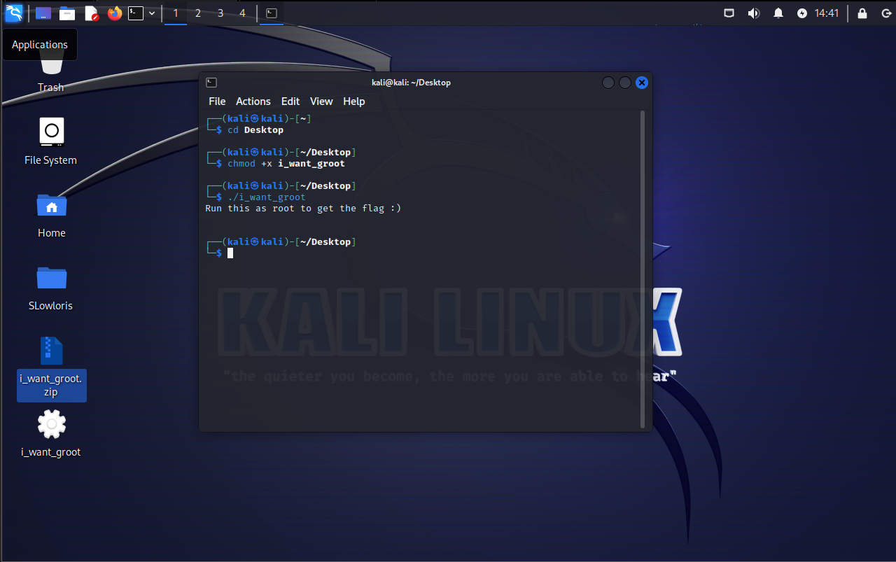
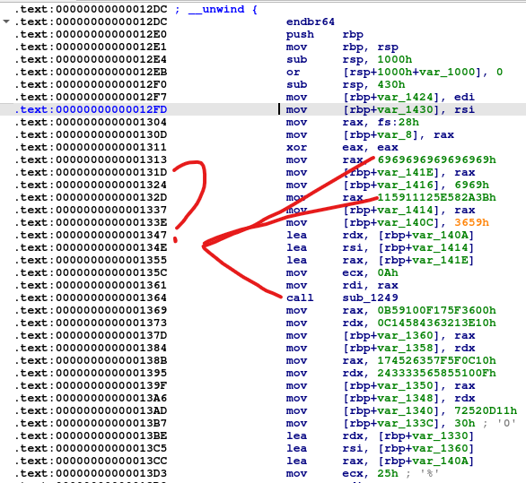
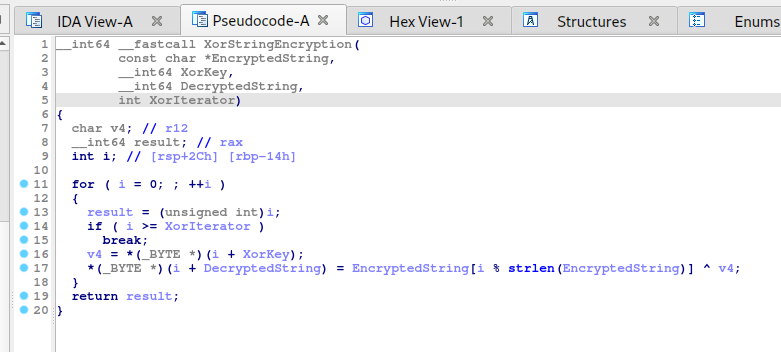
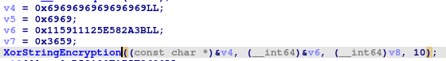
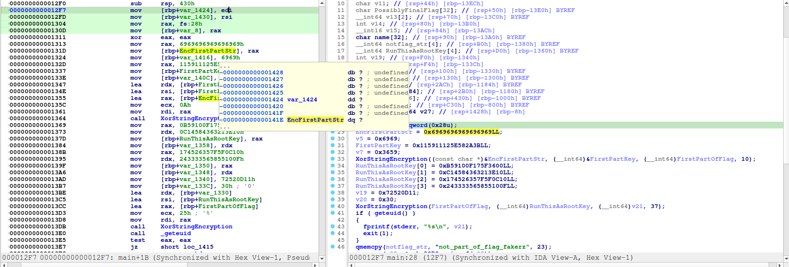
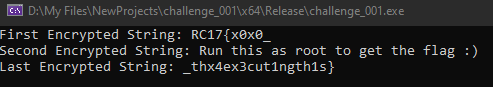

Bin4Cry - iWantGroot
This post will focus on my approach to the Bin4Cry challenge, which is worth 100 points.
Note: The file below contain real malware and must only be executed
inside a vm!.
Upon viewing the challenge page, we have this file called
i_want_groot.exe and is an elf file which means
we can only run this on linux.
To run the file on linux, first we have to make the file itself executable by executing
chmod +x ./i_want_groot
command on linux.

Now, the program is asking for root permission which is really suspicious thus i decided to load
the program into a disassembler called ida pro.
After loading it into a disassembler, i looked for the main function and found this interesting
assembly instructions. As you can see these instructions resemble a pattern for decrypting encrypted data.

Following the call to the sub_1249, I figured out that this is indeed a decryptor to the encrypted data on the stack.
I cleaned the function and the final pseudocode looks like this.

Looking at the function again, it seems possible to rewrite this entire function and call the decryptor ourselves.
All we have to do is figure out how the program calls the decryptor.
it's being called like this:

Notice how the v4 local variable is allocated?
if you look at the v5 variable it's not being used anywhere nor there's references to it being used but don't be fooled the program is actually
using the variable on the stack.

0x141E - 0x1416 = 0x8 which means they are passing string here or a const char* data type.
Although ida says that v5 is not used anywhere on the program, i disagree because if you remember the strlen call inside the decryptor?
if they're passing the memory on rax and rbp+1416h is not null or it has a valid string value then
it will also be included as parameter on the memory.
Now after rewriting the function into c++ we can simply pass the hexadecimal address there.

Note: I only decrypted the 1st, 2nd and last encrypted string since they're easy to decrypt.
At this point, I noticed a clear pattern inside the file.
The first encrypted string is the first part of the flag.
The last encrypted string is the last part of the flag.
The middle part should be somewhere in the middle encrypted data but the memory is allocated on
runtime so let's try to run the program first and hopefully get an idea.